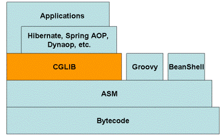

一、CGLIBとは？
CGLIBは、強力で高性能なコード生成パッケージです。インターフェースを実装していないクラスにプロキシを提供し、JDKの動的プロキシの優れた補完役となります。通常はJavaの動的プロキシを使用してプロキシを作成できますが、プロキシ対象のクラスがインターフェースを実装していない場合や、より良いパフォーマンスを求める場合は、CGLIBが良い選択です。
CGLIBはオープンソースプロジェクトとして、そのコードはGitHubでホストされています。アドレスは次のとおりです：https://github.com/cglib/cglib
二、CGLIBの原理
CGLIBの原理：プロキシ対象クラスのサブクラスを動的に生成し、サブクラスはプロキシ対象クラスのfinalではないすべてのメソッドをオーバーライドします。サブクラスでは、メソッドインターセプト技術を用いてすべての親クラスのメソッド呼び出しをインターセプトし、そのまま横断的ロジックを織り込みます。これは、Javaリフレクションを使用するJDK動的プロキシよりも高速です。
CGLIBの基盤：バイトコード処理フレームワークASMを使用して、バイトコードを変換し、新しいクラスを生成します。ASMの直接使用は推奨されません。JVMの内部構造、classファイルの形式や命令セットに精通している必要があるためです。
CGLIBの欠点：finalメソッドに対しては、プロキシを実行できません。
三、CGLIBの応用
多くのAOPフレームワークで広く使用されています。例えばSpring AOPやdynaopです。HibernateはCGLIBを使用して、単一終端（多対一および一対一）の関連付けをプロキシします。
四、なぜCGLIBを使うのか？
CGLIBプロキシは主にバイトコードの操作を通じて、オブジェクトに間接レベルを導入し、オブジェクトへのアクセスを制御します。Javaにも動的プロキシがあり、同じことを行うことは知っています。では、なぜJava動的プロキシを直接使わずにCGLIBを使うのでしょうか？答えは、CGLIBはJDK動的プロキシよりも強力だからです。JDK動的プロキシはシンプルで使いやすいですが、致命的な欠点として、インターフェースのみをプロキシできることです。プロキシ対象のクラスが普通のクラスでインターフェースを持たない場合、Java動的プロキシは使用できません。
五、CGLIBの構成

CGLIBの基盤はASM（短小精悍なバイトコード操作フレームワーク）を使用して、バイトコードを操作し新しいクラスを生成します。CGLIBライブラリの他にも、スクリプト言語（GroovyやBeanShellなど）もASMを使用してバイトコードを生成します。ASMはSAXに似たパーサーを使用して高性能を実現しています。ASMの直接使用は推奨されません。Javaバイトコードの形式について十分な理解が必要だからです。
六、CGLIBのAPI
1、Jarパッケージ：
-
cglib-nodep-2.2.jar：nodepパッケージを使用する場合、asmのjarパッケージを関連付ける必要はありません。jarパッケージ内部にasmのクラスが含まれています。
-
cglib-2.2.jar：このjarパッケージを使用する場合、asmのjarパッケージを関連付ける必要があります。そうしないと実行時にエラーが発生します。
2、CGLIBクラスライブラリ：
基本コードが少ないため、学習には一定の困難があります。主にドキュメントと例が不足していることで、これもCGLIBの欠点の一つです。
このシリーズで使用するCGLIBのバージョンは2.2です。
-
net.sf.cglib.core：基盤となるバイトコード処理クラスで、そのほとんどがASMに関連しています。
-
net.sf.cglib.transform：コンパイル時または実行時のクラスとクラスファイルの変換
-
net.sf.cglib.proxy：プロキシ作成とメソッドインターセプターを実装するクラス
-
net.sf.cglib.reflect：高速リフレクションとC#スタイルのプロキシを実装するクラス
-
net.sf.cglib.util：コレクションのソートなどのユーティリティクラス
-
net.sf.cglib.beans：JavaBean関連のユーティリティクラス
この記事では、MethodInterceptorとEnhancerを使用して動的プロキシを実装する方法を紹介します。
一、まずJDKの動的プロキシについて説明します：
JDKの動的プロキシは、リフレクションクラスProxyとInvocationHandlerコールバックインターフェースによって実装されます。しかし、JDKで動的プロキシを行うクラスはインターフェースを実装する必要があります。つまり、そのクラスが実装するインターフェースで定義されたメソッドのみをプロキシできるため、実際のプログラミングでは一定の制限があります。また、リフレクションを使用する効率もあまり高くありません。
二、CGLibを使用して実装する：
CGLibを使用した動的プロキシの実装は、プロキシクラスがインターフェースを実装しなければならないという制限をまったく受けません。また、CGLibは基盤としてASMバイトコード生成フレームワークを採用し、バイトコード技術を使用してプロキシクラスを生成するため、Javaリフレクションを使用するよりも効率が高くなります。唯一注意すべき点は、CGLibはfinalとして宣言されたメソッドをプロキシできないことです。CGLibの原理は、プロキシ対象クラスのサブクラスを動的に生成することだからです。
以下では、CGLibを使用した動的プロキシの実装を具体例で紹介します。
1、プロキシ対象クラス：
まず、インターフェースを一切実装していないクラスを定義します。
package com.zghw.cglib;
@author
public class TargetObject {
public String method1(String paramName) {
return paramName;
}
public int method2(int count) {
return count;
}
public int method3(int count) {
return count;
}
@Override
public String toString() {
return "TargetObject []"+ getClass();
}
}
2、インターセプター：
インターセプターを定義します。ターゲットメソッドを呼び出す際、CGLibはMethodInterceptorインターフェースのメソッドをコールバックしてインターセプトし、独自のプロキシロジックを実装します。これはJDKのInvocationHandlerインターフェースに似ています。
package com.zghw.cglib;
import java.lang.reflect.Method;
import net.sf.cglib.proxy.MethodInterceptor;
import net.sf.cglib.proxy.MethodProxy;
@author
public class TargetInterceptor implements MethodInterceptor{
@Override
public Object intercept(Object obj, Method method, Object[] params,
MethodProxy proxy) throws Throwable {
System.out.println("呼び出し前");
Object result = proxy.invokeSuper(obj, params);
System.out.println("呼び出し後"+result);
return result;
}
}
パラメータ：ObjectはCGLibが動的に生成したプロキシクラスのインスタンス、Methodは前述のエンティティクラスが呼び出したプロキシ対象メソッドの参照、Object[]はパラメータ値のリスト、MethodProxyは生成されたプロキシクラスのメソッドに対するプロキシ参照です。
戻り値：プロキシインスタンスのメソッド呼び出しから返される値。
ここで、proxy.invokeSuper(obj,arg)プロキシクラスインスタンス上のproxyメソッドの親クラスのメソッド（すなわちエンティティクラスTargetObject内の対応するメソッド）を呼び出します。
この例では、プロキシ対象クラスのメソッド呼び出しの前後にそれぞれ一文を出力するだけですが、実際のプログラミングでは他の複雑なロジックにすることもできます。
3、動的プロキシクラスの生成：
package com.zghw.cglib;
import net.sf.cglib.proxy.Callback;
import net.sf.cglib.proxy.CallbackFilter;
import net.sf.cglib.proxy.Enhancer;
import net.sf.cglib.proxy.NoOp;
public class TestCglib {
public static void main(String args[]) {
Enhancer enhancer =new Enhancer();
enhancer.setSuperclass(TargetObject.class);
enhancer.setCallback(new TargetInterceptor());
TargetObject targetObject2=(TargetObject)enhancer.create();
System.out.println(targetObject2);
System.out.println(targetObject2.method1("mmm1"));
System.out.println(targetObject2.method2(100));
System.out.println(targetObject2.method3(200));
}
}
ここでEnhancerクラスはCGLib内のバイトコードエンハンサーであり、処理したいクラスを簡単に拡張できます。今後も頻繁に目にすることになるでしょう。
まず、プロキシ対象クラスTargetObjectを親クラスとして設定し、次にインターセプターTargetInterceptorを設定し、最後にenhancer.create()を実行して動的にプロキシクラスを生成し、Objectから親タイプTargetObjectに強制キャストします。
最後に、プロキシクラス上でメソッドを呼び出します。
4、コールバックフィルターCallbackFilter
一、役割
CGLibのコールバック時に、メソッドごとに異なるコールバックロジックを実行するか、コールバックをまったく実行しないように設定できます。
JDK動的プロキシには同様の機能はなく、InvocationHandlerインターフェースのメソッド呼び出しはプロキシクラス内のすべてのメソッドに対して有効です。
フィルターCallbackFilterインターフェースを実装するクラスを定義します：
package com.zghw.cglib;
import java.lang.reflect.Method;
import net.sf.cglib.proxy.CallbackFilter;
@author
public class TargetMethodCallbackFilter implements CallbackFilter {
@Override
public int accept(Method method) {
if(method.getName().equals("method1")){
System.out.println("filter method1 ==0");
return 0;
}
if(method.getName().equals("method2")){
System.out.println("filter method2 ==1");
return 1;
}
if(method.getName().equals("method3")){
System.out.println("filter method3 ==2");
return 2;
}
return 0;
}
}
ここでreturn値は、プロキシ対象クラスの各メソッドがコールバック配列Callback[]内のどの位置にあるかのインデックスです（下記参照）。
package com.zghw.cglib;
import net.sf.cglib.proxy.Callback;
import net.sf.cglib.proxy.CallbackFilter;
import net.sf.cglib.proxy.Enhancer;
import net.sf.cglib.proxy.NoOp;
public class TestCglib {
public static void main(String args[]) {
Enhancer enhancer =new Enhancer();
enhancer.setSuperclass(TargetObject.class);
CallbackFilter callbackFilter = new TargetMethodCallbackFilter();
Callback noopCb=NoOp.INSTANCE;
Callback callback1=new TargetInterceptor();
Callback fixedValue=new TargetResultFixed();
Callback[] cbarray=new Callback[]{callback1,noopCb,fixedValue};
enhancer.setCallbacks(cbarray);
enhancer.setCallbackFilter(callbackFilter);
TargetObject targetObject2=(TargetObject)enhancer.create();
System.out.println(targetObject2);
System.out.println(targetObject2.method1("mmm1"));
System.out.println(targetObject2.method2(100));
System.out.println(targetObject2.method3(100));
System.out.println(targetObject2.method3(200));
}
}
package com.zghw.cglib;
import net.sf.cglib.proxy.FixedValue;
@author
public class TargetResultFixed implements FixedValue{
@Override
public Object loadObject() throws Exception {
System.out.println("固定結果");
Object obj = 999;
return obj;
}
}
5.遅延ロードオブジェクト
一、役割：
遅延ロードと言えば、よく接する機会があるはずです。特にHibernateを使用するときです。本稿では、実例を通じて遅延ロードの実装方法を分析します。
LazyLoaderインターフェースはCallbackを継承しているため、CGLibにおけるCallbackタイプの一種でもあります。
もう一つの遅延ロードインターフェースはDispatcherです。
Dispatcherインターフェースも同じくCallbackを継承しており、コールバックタイプの一種です。
ただし、DispatcherとLazyLoaderの違いは次のとおりです。LazyLoaderは遅延ロード属性に最初にアクセスしたときだけプロキシクラスのコールバックメソッドをトリガーしますが、Dispatcherは遅延ロード属性にアクセスするたびにプロキシクラスのコールバックメソッドをトリガーします。
二、例：
まず、エンティティクラスLoaderBeanを定義します。このBeanには遅延ロードが必要な属性PropertyBeanがあります。
package com.zghw.cglib;
import net.sf.cglib.proxy.Enhancer;
public class LazyBean {
private String name;
private int age;
private PropertyBean propertyBean;
private PropertyBean propertyBeanDispatcher;
public LazyBean(String name, int age) {
System.out.println("lazy bean init");
this.name = name;
this.age = age;
this.propertyBean = createPropertyBean();
this.propertyBeanDispatcher = createPropertyBeanDispatcher();
}
@return
private PropertyBean createPropertyBean() {
Enhancer enhancer = new Enhancer();
enhancer.setSuperclass(PropertyBean.class);
PropertyBean pb = (PropertyBean) enhancer.create(PropertyBean.class,
new ConcreteClassLazyLoader());
return pb;
}
@return
private PropertyBean createPropertyBeanDispatcher() {
Enhancer enhancer = new Enhancer();
enhancer.setSuperclass(PropertyBean.class);
PropertyBean pb = (PropertyBean) enhancer.create(PropertyBean.class,
new ConcreteClassDispatcher());
return pb;
}
public String getName() {
return name;
}
public void setName(String name) {
this.name = name;
}
public int getAge() {
return age;
}
public void setAge(int age) {
this.age = age;
}
public PropertyBean getPropertyBean() {
return propertyBean;
}
public void setPropertyBean(PropertyBean propertyBean) {
this.propertyBean = propertyBean;
}
public PropertyBean getPropertyBeanDispatcher() {
return propertyBeanDispatcher;
}
public void setPropertyBeanDispatcher(PropertyBean propertyBeanDispatcher) {
this.propertyBeanDispatcher = propertyBeanDispatcher;
}
@Override
public String toString() {
return "LazyBean [name=" + name + ", age=" + age + ", propertyBean="
+ propertyBean + "]";
}
}
package com.zghw.cglib;
public class PropertyBean {
private String key;
private Object value;
public String getKey() {
return key;
}
public void setKey(String key) {
this.key = key;
}
public Object getValue() {
return value;
}
public void setValue(Object value) {
this.value = value;
}
@Override
public String toString() {
return "PropertyBean [key=" + key + ", value=" + value + "]" +getClass();
}
}
package com.zghw.cglib;
import net.sf.cglib.proxy.LazyLoader;
public class ConcreteClassLazyLoader implements LazyLoader {
@Override
public Object loadObject() throws Exception {
System.out.println("before lazyLoader...");
PropertyBean propertyBean = new PropertyBean();
propertyBean.setKey("zghw");
propertyBean.setValue(new TargetObject());
System.out.println("after lazyLoader...");
return propertyBean;
}
}
package com.zghw.cglib;
import net.sf.cglib.proxy.Dispatcher;
public class ConcreteClassDispatcher implements Dispatcher{
@Override
public Object loadObject() throws Exception {
System.out.println("before Dispatcher...");
PropertyBean propertyBean = new PropertyBean();
propertyBean.setKey("xxx");
propertyBean.setValue(new TargetObject());
System.out.println("after Dispatcher...");
return propertyBean;
}
}
6. インターフェース生成器InterfaceMaker
一、機能：
InterfaceMakerは、指定されたクラスで定義されたすべてのメソッドを含むインターフェースを動的に生成します。
二、例：
package com.zghw.cglib;
import java.lang.reflect.InvocationTargetException;
import java.lang.reflect.Method;
import net.sf.cglib.proxy.Enhancer;
import net.sf.cglib.proxy.InterfaceMaker;
import net.sf.cglib.proxy.MethodInterceptor;
import net.sf.cglib.proxy.MethodProxy;
public class TestInterfaceMaker {
public static void main(String[] args) throws NoSuchMethodException, SecurityException, IllegalAccessException, IllegalArgumentException, InvocationTargetException {
InterfaceMaker interfaceMaker =new InterfaceMaker();
interfaceMaker.add(TargetObject.class);
Class<?> targetInterface=interfaceMaker.create();
for(Method method : targetInterface.getMethods()){
System.out.println(method.getName());
}
Object object = Enhancer.create(Object.class, new Class[]{targetInterface}, new MethodInterceptor(){
@Override
public Object intercept(Object obj, Method method, Object[] args,
MethodProxy methodProxy) throws Throwable {
if(method.getName().equals("method1")){
System.out.println("filter method1 ");
return "mmmmmmmmm";
}
if(method.getName().equals("method2")){
System.out.println("filter method2 ");
return 1111111;
}
if(method.getName().equals("method3")){
System.out.println("filter method3 ");
return 3333;
}
return "default";
}});
Method targetMethod1=object.getClass().getMethod("method3",new Class[]{int.class});
int i=(int)targetMethod1.invoke(object, new Object[]{33});
Method targetMethod=object.getClass().getMethod("method1",new Class[]{String.class});
System.out.println(targetMethod.invoke(object, new Object[]{"sdfs"}));
}
}
原文アドレス：
https://blog.csdn.net/zghwaicsdn/article/details/50957474
https://blog.csdn.net/danchu/article/details/70238002